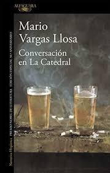

Mario Vargas Llosa
Mario Vargas Llosa (1936-) es un escritor y ensayista peruano, nacido en Arequipa. Reconocido por *La ciudad y los perros* y su exploración de temas como el poder y la libertad, ganó el Premio Nobel de Literatura en 2010. Su obra, que incluye novelas, ensayos y relatos, ha influido profundamente en la literatura hispanoamericana.
Galería de Obras
La ciudad y los perros
La casa verde

Conversación en La Catedral
Pantaleón y las visitadoras
La tía Julia y el escribidor
La guerra del fin del mundo

El hablador
Elogio de la madrastra
El sueño del celta